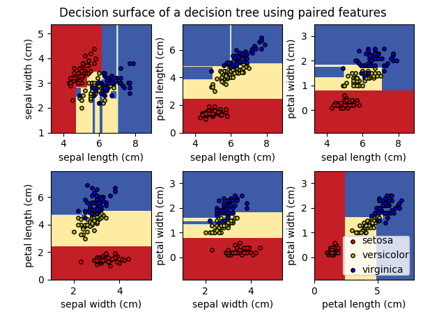
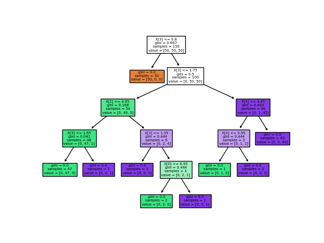

Note
Click here to download the full example code or run this example in your browser via Binder
Plot the decision surface of a decision tree on the iris dataset¶
Plot the decision surface of a decision tree trained on pairs of features of the iris dataset.
See decision tree for more information on the estimator.
For each pair of iris features, the decision tree learns decision boundaries made of combinations of simple thresholding rules inferred from the training samples.
We also show the tree structure of a model built on all of the features.
- 
- 
Out:
print(__doc__)
import numpy as np
import matplotlib.pyplot as plt
from sklearn.datasets import load_iris
from sklearn.tree import DecisionTreeClassifier, plot_tree
# Parameters
n_classes = 3
plot_colors = "ryb"
plot_step = 0.02
# Load data
iris = load_iris()
for pairidx, pair in enumerate([[0, 1], [0, 2], [0, 3],
[1, 2], [1, 3], [2, 3]]):
# We only take the two corresponding features
X = iris.data[:, pair]
y = iris.target
# Train
clf = DecisionTreeClassifier().fit(X, y)
# Plot the decision boundary
plt.subplot(2, 3, pairidx + 1)
x_min, x_max = X[:, 0].min() - 1, X[:, 0].max() + 1
y_min, y_max = X[:, 1].min() - 1, X[:, 1].max() + 1
xx, yy = np.meshgrid(np.arange(x_min, x_max, plot_step),
np.arange(y_min, y_max, plot_step))
plt.tight_layout(h_pad=0.5, w_pad=0.5, pad=2.5)
Z = clf.predict(np.c_[xx.ravel(), yy.ravel()])
Z = Z.reshape(xx.shape)
cs = plt.contourf(xx, yy, Z, cmap=plt.cm.RdYlBu)
plt.xlabel(iris.feature_names[pair[0]])
plt.ylabel(iris.feature_names[pair[1]])
# Plot the training points
for i, color in zip(range(n_classes), plot_colors):
idx = np.where(y == i)
plt.scatter(X[idx, 0], X[idx, 1], c=color, label=iris.target_names[i],
cmap=plt.cm.RdYlBu, edgecolor='black', s=15)
plt.suptitle("Decision surface of a decision tree using paired features")
plt.legend(loc='lower right', borderpad=0, handletextpad=0)
plt.axis("tight")
plt.figure()
clf = DecisionTreeClassifier().fit(iris.data, iris.target)
plot_tree(clf, filled=True)
plt.show()
Total running time of the script: ( 0 minutes 0.828 seconds)